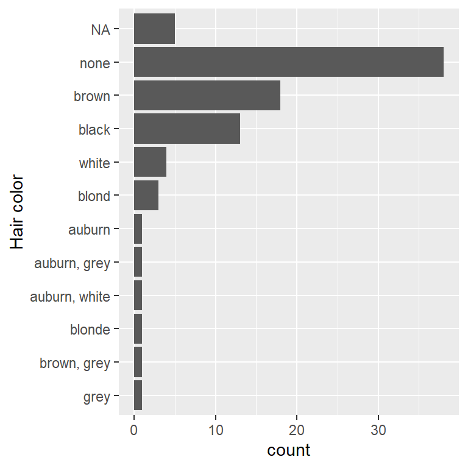
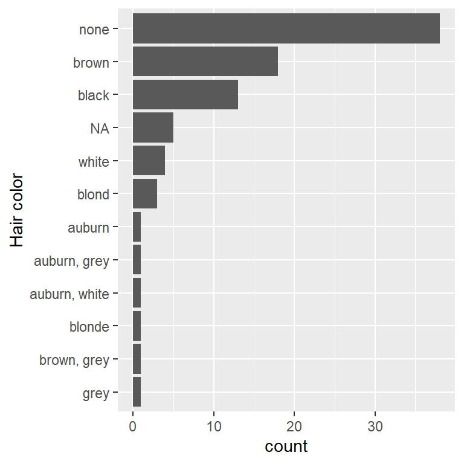
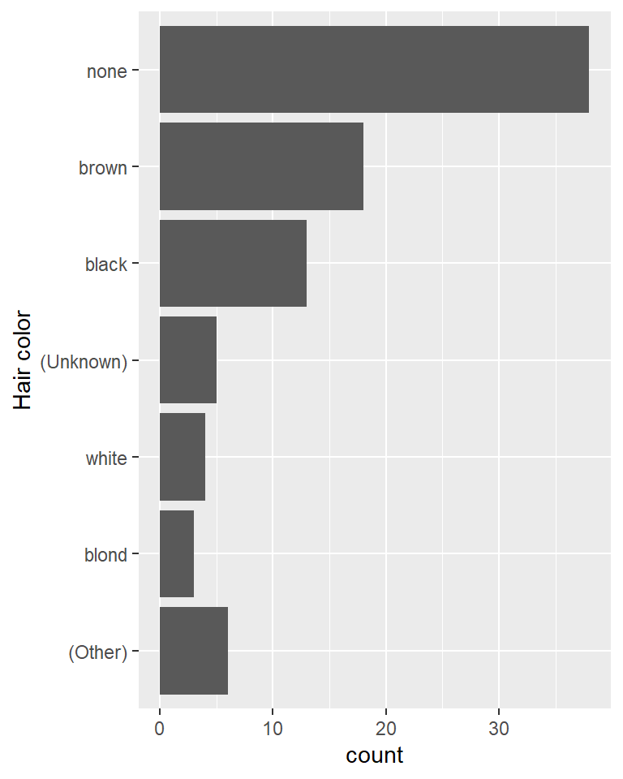

install.packages("forcats")forcats 1.0.0
package
There are no major new features in this version of forcats, but the 1.0.0 label now clearly advertises that this a stable member of the tidyverse.
We’re so happy to announce the release of forcats 1.0.0. The goal of the forcats package is to provide a suite of tools that solve common problems with factors, including changing the order of levels or the values.
You can install it from CRAN with:
While this is the 1.0.0 release of forcats, this version number is mainly to signal that we think forcats is stable, and that we don’t anticipate any major changes in the future. This blog post will outline the only major new feature in this version: better tools for dealing with the two ways that missing values can be represented in factors. As usual, you can see a full list of changes in the release notes.
library(forcats)NA in levels vs NA in values
There are two ways to represent a missing value in a factor:
You can include it in the values of the factor; it does not appear in the levels and
is.na()reports it as missing. This is how missing values are encoded by default:f1 <- factor(c("x", "y", NA, NA, "x")) levels(f1)[1] "x" "y"is.na(f1)[1] FALSE FALSE TRUE TRUE FALSEYou can include it in the levels of the factor, thus
is.na()does not report it as missing. This requires a little more work to create, because, by default,factor()usesexclude = NA, meaning that missing values are not included in the levels. You can forceNAto be included by settingexclude = NULL:f2 <- factor(c("x", "y", NA, NA, "x"), exclude = NULL) levels(f2)[1] "x" "y" NAis.na(f2)[1] FALSE FALSE FALSE FALSE FALSE
You can see the difference a little more clearly by looking at the underlying integer values of the factor:
as.integer(f1)[1] 1 2 NA NA 1as.integer(f2)[1] 1 2 3 3 1When the NA is stored in the levels, there’s no missing value in the underlying integer values, because the value of level 3 is NA.
NAs in the values tend to be best for data analysis, because is.na() works as you’d expect. NAs in the levels are useful if you need to control where missing values are shown in a table or a plot. To make it easier to switch between these forms, forcats now comes fct_na_value_to_level() and fct_na_level_to_value().
Here’s a practical example of why it matters. In the plot below, I’ve attempted to use fct_infreq() to reorder the levels of the factor so that the highest frequency levels are at the top of the bar chart:
library(ggplot2)
library(dplyr, warn.conflicts = FALSE)
ggplot(starwars, aes(y = fct_rev(fct_infreq(hair_color)))) +
geom_bar() +
labs(y = "Hair color")
Unfortunately, however, because the NAs are stored in the values, fct_infreq() has no ability to affect them, so they appear in their default position, after all the other values (it might not be obvious that that they’re after the other values here, but remember in plots y values have their smallest values at the bottom and highest values at the top).
We can make fct_infreq() do what we want by moving the NA from the values to the levels:
ggplot(starwars, aes(y = fct_rev(fct_infreq(fct_na_value_to_level(hair_color))))) +
geom_bar() +
labs(y = "Hair color")
That code is getting a little verbose so lets pull it out into a separate dplyr step and pull the factor transformation in to its own mini pipeline:
starwars |>
mutate(
hair_color = hair_color |>
fct_na_value_to_level() |>
fct_infreq() |>
fct_rev()
) |>
ggplot(aes(y = hair_color)) +
geom_bar() +
labs(y = "Hair color")This structure makes it easier to make other adjustments. For example, the code below uses a more informative label for the missing level and lumps together the colours with less than 2 observations. I’ve left the (Other) category as a bar at the end, but if I wanted to I could cause it to sort in frequency order by flipping the order of fct_infreq() and fct_lump_min() .
starwars |>
mutate(
hair_color = hair_color |>
fct_na_value_to_level("(Unknown)") |>
fct_infreq() |>
fct_lump_min(2, other_level = "(Other)") |>
fct_rev()
) |>
ggplot(aes(y = hair_color)) +
geom_bar() +
labs(y = "Hair color")
Looking closely at what got lumped together made me realise that there’s an existing “Unknown” level that should probably be represented as a missing value. One way to fix that is with fct_na_level_to_value():
starwars |>
mutate(
hair_color = hair_color |>
fct_na_level_to_value("Unknown") |>
fct_na_value_to_level("(Unknown)") |>
fct_infreq() |>
fct_lump_min(2, other_level = "(Other)") |>
fct_rev()
) |>
ggplot(aes(y = hair_color)) +
geom_bar() +
labs(y = "Hair color")